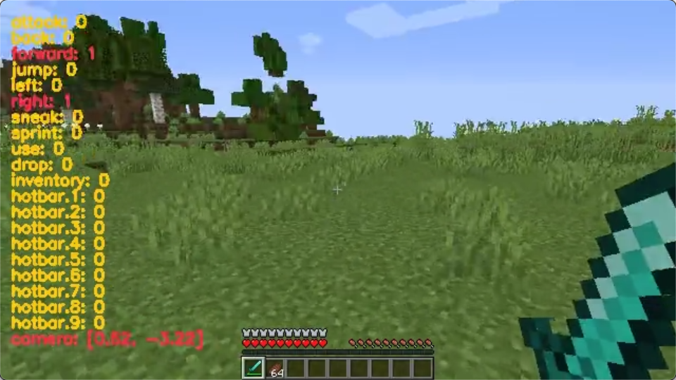
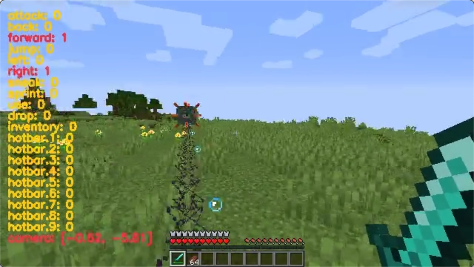
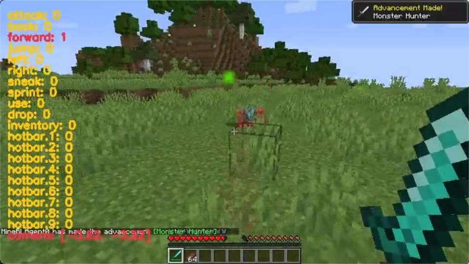
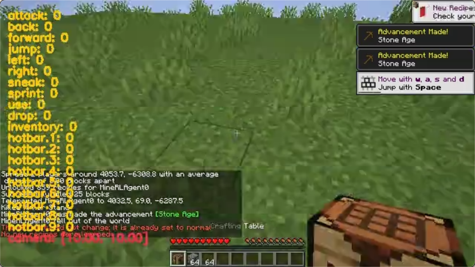
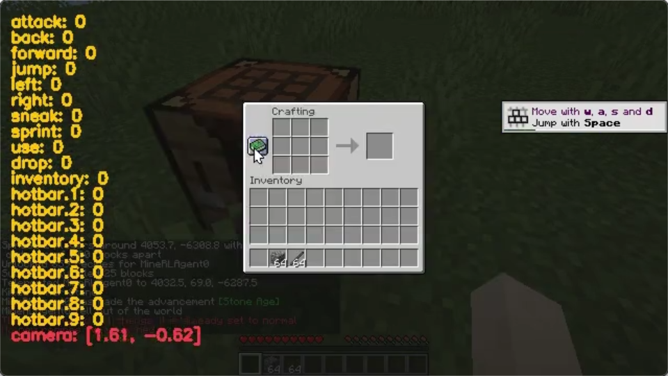
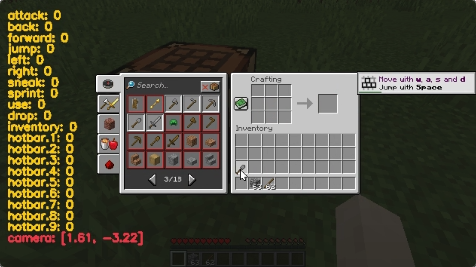

Decompose trajectories
Convert each multi-turn rollout into compact state–action samples with manageable context.
Aligning GRPO with State-Action Modeling for Open-World VLM Agents
Turning long, noisy rollouts into focused state–action learning signals—so VLM agents can learn to navigate, craft, smelt, and fight in open worlds.
Minecraft tasks
GUI success over prior best
fewer embodied steps
task families, best reported
The central idea
Standard GRPO treats every full rollout as one optimization sample. In open worlds, that sample quickly becomes too long and too noisy. GROW preserves the group-relative comparison, but moves the learning unit to the decisions that matter: local states and actions.
Convert each multi-turn rollout into compact state–action samples with manageable context.
Discount task-level success backward so decisions nearer completion receive stronger credit.
Normalize rewards across the decomposed rollout group and refine the policy without training a separate value model.
Policy rollouts
GROW operates from first-person RGB pixels and human-like keyboard and mouse actions. Select a skill family to explore successful rollouts.
Why GROW
Full-trajectory GRPO accumulates every visual observation and action into one sample. By roughly 120 interaction steps, the mean context in our setting reaches 40K tokens—already beyond the 32K limit. GROW avoids that growth while preserving the group-relative learning signal in a local surrogate objective.
Design principleThe optimization unit should match the agent’s decision unit.
Excessive context grows linearly with interaction length.
Noisy history obscures the observation that drives the current action.
State–action samples keep context focused and appropriately sized for local decisions.
From long rollouts to local learning signals
Step 01
Run the same instruction in G open-world environments and score each complete trajectory.
Step 02
Split each trajectory by decision and discount the terminal reward backward through time.
ri,t = γHᵢ−t R(τᵢ)
Step 03
Normalize discounted rewards across the rollout group and optimize clipped policy ratios.
Surrogate analysis
Under simplifying assumptions, the first term reflects trajectory-level relative preference, while the second sharpens temporal credit assignment inside successful trajectories.
Main results
Across more than 800 Minecraft tasks, GROW sets the best reported success rate and execution efficiency in embodied, GUI, and combat task families.
Average success rate
Average success rate
Average success rate
ASR is reported as mean over all tasks in each category; standard deviations appear in the paper. “Prior best” follows the reported baselines.
Generalization
Starting from an SFT-initialized Qwen2-VL-7B policy, reinforcement learning uses only eight Minecraft tasks. Yet the learned interaction strategies transfer across all three families, with the largest RL-held-out gain in visually cluttered GUI operation.
Learning dynamics
Eight RL tasks · identical training budget
Behavior-level analysis
Diagnostic tasks isolate what changes in the policy. GROW learns to hold alignment, recover lost targets, and ignore irrelevant GUI elements—local behaviors that support many downstream tasks.
Sustain crosshair alignment across a long breaking sequence. Both compared baselines score 0%.
Search, restore visual contact, pursue, and re-engage a moving target. Both baselines score 0%.
Select the right recipe among irrelevant items, versus 40% for JARVIS-VLA and 2% before RL.
The policy actively reacquires the Guardian, closes distance under attack, and sustains engagement.



The policy moves from embodied setup to recipe-book navigation and verifies the crafted Stone Shovel.



Beyond Minecraft
When separately trained in simulated Language Table, GROW improves state–action policies for language-conditioned manipulation—evidence that the framework is not tied to one game or one action space.
Average success rate across five task families +14.39 pp
Resources
Paper, evaluation code, and the released checkpoint are publicly available.
BibTeX
@article{wu2026grow,
title = {GROW: Aligning GRPO with State-Action Modeling for Open-World VLM Agents},
author = {Wu, Xiongbin and Luo, Zhihao and Lei, Shanzhe and Zhang, Lechao and
Wang, Xuhong and Yang, Jie and Zheng, Zhonglong and Zheng, Yuanjie and
Tan, Xin and Liu, Wei},
journal = {arXiv preprint arXiv:2605.20246},
year = {2026}
}